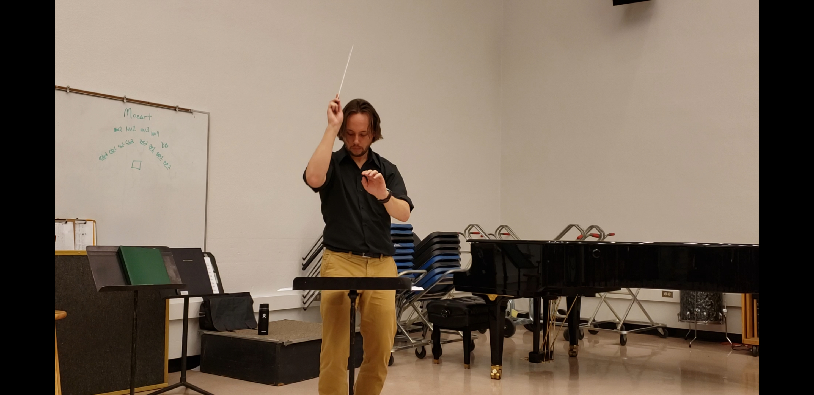

About
 Paul is an active freelance musician and educator in the Boise area. He has a varied performance history that includes the Washington-Idaho Symphony (Pullman, WA, five-year tenure), Great Falls Symphony (Great Falls, MT), Symphony of the Southwest (Mesa, AZ), Salt River Brass (Mesa, AZ), Phoenix Theatre (Phoenix, AZ), Orpheum Theater (Phoenix, AZ), and Scottsdale Music Theater Company (Scottsdale, AZ). In 2018, Paul selected to participate in the Pokorny Seminar where he worked with Gene Pokorny (Chicago SO), Jim Markey (Boston SO), and Tim Higgins (San Francisco SO). In 2019, Paul joined South Mountain Community College as their adjunct trombone faculty where he teaches trombone lessons and acts as faculty accompaniment for the SMCC Day Jazz Band.
Paul is an active freelance musician and educator in the Boise area. He has a varied performance history that includes the Washington-Idaho Symphony (Pullman, WA, five-year tenure), Great Falls Symphony (Great Falls, MT), Symphony of the Southwest (Mesa, AZ), Salt River Brass (Mesa, AZ), Phoenix Theatre (Phoenix, AZ), Orpheum Theater (Phoenix, AZ), and Scottsdale Music Theater Company (Scottsdale, AZ). In 2018, Paul selected to participate in the Pokorny Seminar where he worked with Gene Pokorny (Chicago SO), Jim Markey (Boston SO), and Tim Higgins (San Francisco SO). In 2019, Paul joined South Mountain Community College as their adjunct trombone faculty where he teaches trombone lessons and acts as faculty accompaniment for the SMCC Day Jazz Band.
Paul has performed in ensembles that have featured the likes of Joe Alessi, Inon Barnatan, Eugene Rousseau, Douglas Yeo, Mateusz Wolski, and Rex Richardson. He also performed in big bands that featured the likes of Ryan Haynes, Anat Cohen, Paquito D’Rivera Jimmy Heath, Lewis Nash, Benny Golson, Terell Stafford, Corey Christiansen, Bill Watrous, Wayne Bergeron, Andy Martin, and many others.Paul has recorded with several groups that include University of Idaho Jazz Band 1, Arizona State University Desert Bones (It’s Beginning to Look a Lot Like Christmas), and most recently, Salt River Brass.
As a soloist, Paul recently made his debut as one of several featured soloists on the 2017 Salt River Brass holiday concert. He has also been a featured soloist with the Arizona State University Trombone Ensemble.
From 2017 to 2019, Paul was one of two assistant conductors of the Arizona State University Trombone Ensemble. He rehearsed and conducted numerous works for trombone ensemble. Some of these works include Tommy Pederson's Crimson Callop, and Anton Bruckner's Inveni David arranged by Douglas Yeo. Paul had the honor of conducting the Arizona State University Trombone Ensemble in its performance of Bruckner's Inveni David at the 2017 International Trombone Festival.
Prior to moving to Boise, Paul was an active in providing workshops and masterclasses to schools in Phoenix. He also maintains an active private studio with students performing in several all-region and all-state ensembles. From 2017-2020, Paul served as an adjudicator for regional ensemble auditions for AMEA. He is excited to continue his educational colaborations for the educators and music students in the Boise-area. For more information about lessons, please click on the "Lesson" link above.
Paul received his Bachelor of Music in Performance from the University of Idaho in Moscow, Idaho. At Idaho, he studied with Professor Al Gemberling. He continued to pursue his education at Arizona State University in Tempe, Arizona. Here, Paul studied under Professor Douglas Yeo and completed the degree Master of Music in Performance. Paul completed his Doctorate of Musical Arts at Arizona State University under the guidance of Dr. Brad Edwards.